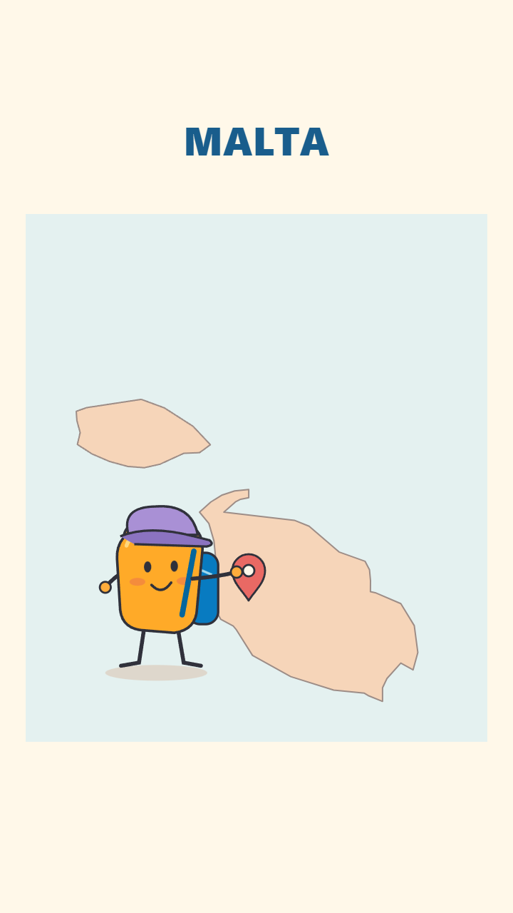
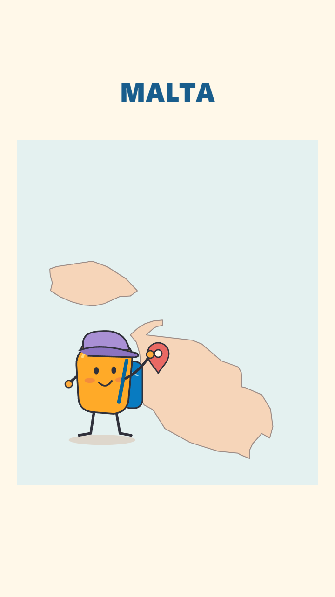
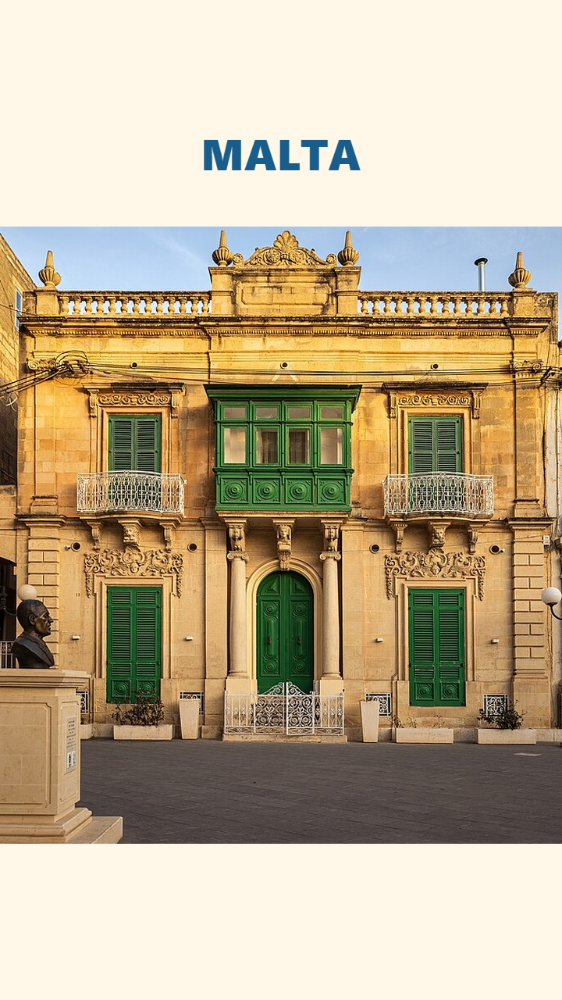

Bộ frame tĩnh để duyệt thiết kế. Chưa dựng motion, chưa thay master.



Ảnh: Marika Caruana — Townhouse in Zejtun, CC BY-SA 4.0; đã crop. Bản đồ: Natural Earth, public domain. Ảnh kiến trúc tham chiếu, không phải tin rao bán.